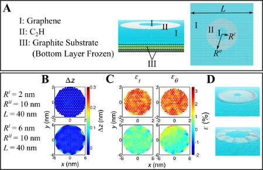
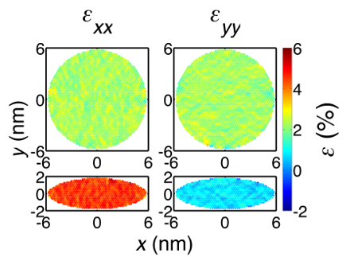

Our work shows that strains as large as 5% can be produced in monolayer materials using patterned adatom adsorption. Our results elucidate a method for strain engineering at the nanoscale in monolayer devices.
Advances in the isolation and fabrication of monolayer materials combined with their excellent mechanical strength have generated a lot of interest in their potential for use in novel electronic and optical devices, ranging from field effect transistors to solar cells and effective catalysts. Strain engineering has been proposed as the basis of a variety of such devices. One would like to produce strains over large areas in these monolayer materials using methods comparable to standard lithographic techniques. In this work, we explore the potential for the control of strain at the nanoscale in monolayer materials through patterned adatom adsorption, which has been employed in the laboratory.

(A) Side view and top view of the initial configuration of the system with annular adsorption pattern. (B)(C) Out-of-plane displacement and the strain inside the adsorption region. (D) Snapshots of the adsorption region at the end of simulations.
In the context of graphene, we discover that the monolayer strain results from a competition between the in-plane elasticity and out-of-plane relaxation deformations. For hydrogen adatoms on graphene, the strain outside the adsorption region vanishes due to out-of-plane relaxation deformations. Under some circumstances, an annular adsorption pattern generates homogeneous tensile strains of approximately 2% in graphene inside the adsorption region. We find that an elliptical adsorption pattern produces strains of as large as 5%, close to the strain in the adsorbed region. Also, nonzero maximum shear strain (~4%) can be introduced by the elliptical adsorption pattern. We find that an elastic plane stress model provides qualitative guidance for strain magnitudes and conditions under which strain-diminishing buckling can be avoided. We identify geometric conditions under which this effect has potential to be scaled to larger areas. These conclusions are expected to be qualitatively applicable to other monolayer materials, including monolayer transition metal dichalcogenides (TMDs), which are of interest in part due to their nonzero bandgap. We expect our investigation to provide guidance for the engineering of strain in electronic and optical devices made from monolayer materials.

Comparison of strain in annular and elliptical adatom adsorption patterns.
Publication:
Li, Y., Duerloo, K.-A. N., Reed, E. J., Strain Engineering in Monolayer Materials Using Patterned Adatom Adsorption. Nano Letters, doi:10.1021/nl500974t (2014).